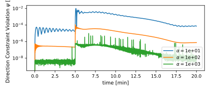
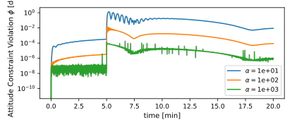
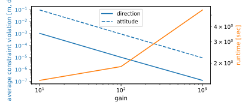

scenarioConstrainedDynamicsManeuverAnalysis
Overview
This scenario further demonstrates the capabilities of Module: constraintDynamicEffector in simulating a dynamic coupling between two spacecraft. The constraint effector allows the simulation of two spacecraft rigid hubs attached through an arm of variable rigidity and is agnostic to the parameters of either vehicle. The scenario analyzes the impact of different gains on the motion of two spacecraft while one spacecraft is performing a maneuver towing the other. This scenario demonstrates a required analysis for any mission simulation utilizing the constraint effector, as the gains must be tuned to achieve a desired fidelity and runtime dependent on how “dynamic” the scenario is stressing the constraint. Aspects affecting this include:
the vehicle mass and inertia
vehicle spin rate
the moment arm between spacecraft (connection point distance from COM and length of arm)
accelerations acting on each spacecraft (gravity, thrust, disturbances)
The script is found in the folder basilisk/examples and executed by using:
python3 scenarioConstrainedDynamicsManeuverAnalysis.py
The scenario outputs three plots. The first one shows the direction constraint violations vs. time for different gains to show how they change for different arm stiffness values. The second plots shows the same time history but for attitude constraint violations. The third plot shows the overall simulation performance, plotting both the average constraint violations and simulation runtime vs. gain.
Illustration of Simulation Results
show_plots = True, gain_list = [1E1, 1E2, 1E3], relpos_config = 'alongtrackahead', orbit_config = 'LEO', maneuver_config = 'attitude', sc_model = 'MEV2'
The time history for the direction and attitude constraint violations during an attitude maneuver is shown below for different values of the gains. The attitude maneuver controls the chaser to turn 180 degrees, rotating the target along with it.
 The figure below shows the performance of the simulation for different gain values. The left axis shows the constraint violations averaged over the entire simulation, while the right axis shows the total runtime of the simulation. The dashed line is the attitude average and the solid line is the direction average.
Performing the same analysis for an orbital maneuver produces the following results. The orbital maneuver controls the chaser to push the stack with the target ahead.
show_plots = True, gain_list = [1E1, 1E2, 1E3], relpos_config = 'alongtrackahead', orbit_config = 'LEO', maneuver_config = 'orbit', sc_model = 'MEV2'
- class scenarioConstrainedDynamicsManeuverAnalysis.SimBaseClass(dynRate=0.1)[source]
Bases:
SimBaseClass
- scenarioConstrainedDynamicsManeuverAnalysis.run(show_plots, gain_list, relpos_config, orbit_config, maneuver_config, sc_model)[source]
- Parameters:
show_plots (bool) – Determines if the script should display plots
gain_list (float list) – Choose which gain values to test (how stiff the arm is, ideally 1E1 to 1E4)
relpos_config (str) – Choose where the servicer spacecraft starts w.r.t. the target
alongtrackahead,alongtrackbehind,radial, orantiradialorbit_config (str) – Choose which orbit configuration to use between
LEOorno orbitmaneuver_config (str) – Choose which maneuver configuration to use between
orbitorattitudesc_model (str) – Choose which spacecraft models to use, determines mass/inertia properties
bskSat,MEV1, orMEV2